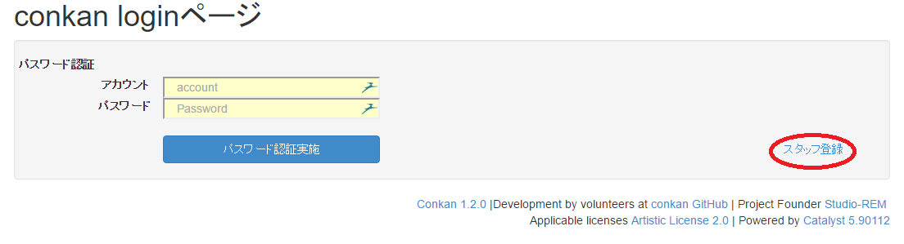
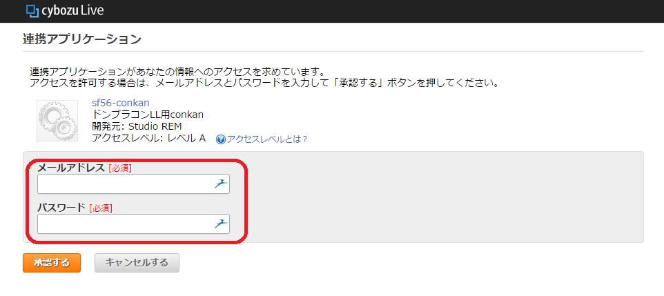
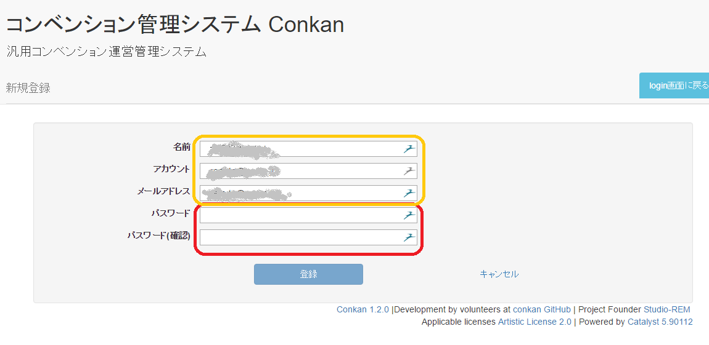

conkan利用マニュアル
スタッフ登録
トップページにアクセスし、「スタッフ登録」をクリック
サイボウズ認証を実施し、「承認」する
サイボウズ認証の目的は、登録するスタッフの本人確認である。
ここで使用するメールアドレス/パスワードは、 特定のサイボウズグループ(conkan_program環境構築時に設定) に参加しているユーザのものでなければならない。
特定のサイボウズグループに参加していない場合、サイボウズ認証に成功してもconkan_programスタッフ登録には失敗するconkan_programのスタッフ情報を登録する
パスワード/パスワード(確認)には、 conkan_program用の新たなパスワードを入力する。
サイボウズ認証のパスワードとは独立名前/アカウント/メールアドレスには サイボウズ認証したユーザの名前/メールアドレス/メールアドレスが設定されているが、必要であれば変更しても良い。すでに存在するアカウントと同じアカウントは設定できない。こうして登録したアカウントの権限は「企画スタッフ」である。
また、名前とメールアドレスは後から変更できるが、アカウントは変更できない。
よって、ここでは設定されている値をそのまま使うことを推奨する。
上位権限である「システム管理」「企画管理スタッフ」の権限が必要な場合、「システム管理者」に依頼すること。セキュリティの観点から、スタッフ一覧(およびその権限)はシステム管理者しか閲覧できなくなっている。
システム管理者が誰であるかは、別途(サイボウズグループ等で)確認すること。